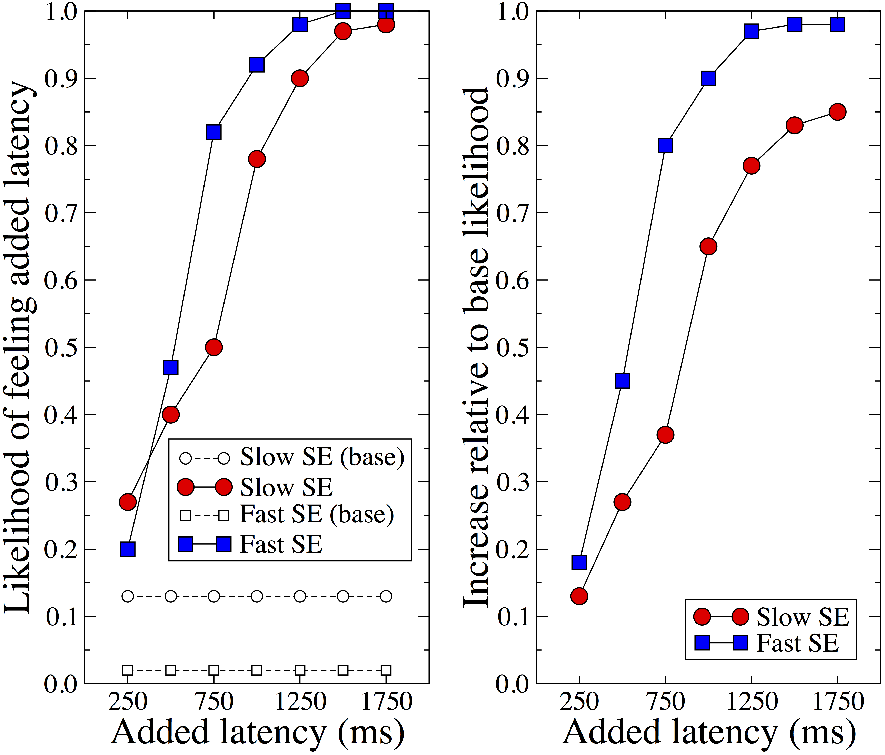

Impact of search latency on user engagement in web search
Understanding and Leveraging the Impact of Response Latency on User Behaviour in Web Search
X. Bai, I. Arapakis, B. Barla Cambazoglu, A. Freire
Abstract - The interplay between the response latency of web search systems and users' search experience has only recently started to attract research attention, despite the important implications of response latency on monetisation of such systems. In this work, we carry out two complementary studies to investigate the impact of response latency on users' searching behaviour in web search engines. We first conduct a controlled user study to investigate the sensitivity of users to increasing delays in response latency. This study shows that the users of a fast search system are more sensitive to delays than the users of a slow search system. Moreover, the study finds that users are more likely to notice the response latency delays beyond a certain latency threshold, their search experience potentially being affected. We then analyse a large number of search queries obtained from Yahoo Web Search to investigate the impact of response latency on users' click behaviour. This analysis demonstrates the significant change in click behaviour as the response latency increases. We also find that certain user, context, and query attributes play a role in the way increasing response latency affects the click behaviour. To demonstrate a possible use case for our findings, we devise a machine learning framework that leverages the latency impact, together with other features, to predict whether a user will issue any clicks on web search results. As a further extension of this use case, we investigate whether this machine learning framework can be exploited to help search engines reduce their energy consumption during query processing.
TBD
PDF
Web search engine; response latency; user behaviour; search experience; user engagement; click prediction; energy consumption; green information retrieval
Unconscious Physiological Effects of Search Latency on Users and Their Click Behaviour
M. Barreda-Àngeles, I. Arapakis, X. Bai, B. Barla Cambazoglu, and A. Pereda-Baños
Abstract - Understanding the impact of a search system’s response latency on its users’ searching behaviour has been recently an active research topic in the information retrieval and human-computer interaction areas. Along the same line, this paper focuses on the user impact of search latency and makes the following two contributions. First, through a controlled experiment, we reveal the physiological effects of response latency on users and show that these effects are present even at small increases in response latency. We compare these effects with the information gathered from self-reports and show that they capture the nuanced attentional and emotional reactions to latency much better. Second, we carry out a large-scale analysis using a web search query log obtained from Yahoo to understand the change in the way users engage with a web search engine under varying levels of increasing response latency. In particular, we analyse the change in the click behaviour of users when they are subject to increasing response latency and reveal significant behavioural differences.
10.1145/2766462.2767719
PDF
Web search engine; response latency; user study; physiological signals; user behaviour; query log analysis; click behaviour
Impact of Response Latency on User Behavior in Web Search
I. Arapakis, X. Bai, and B. Barla Cambazoglu
Abstract - Traditionally, the efficiency and effectiveness of search systems have both been of great interest to the information retrieval community. However, an in-depth analysis on the interplay between the response latency of web search systems and users’ search experience has been missing so far. In order to fill this gap, we conduct two separate studies aiming to reveal how response latency affects the user behavior in web search. First, we conduct a controlled user study trying to understand how users perceive the response latency of a search system and how sensitive they are to increasing delays in response. This study reveals that, when artificial delays are introduced into the response, the users of a fast search system are more likely to notice these delays than the users of a slow search system. The introduced delays become noticeable by the users once they exceed a certain threshold value. Second, we perform an analysis using a large-scale query log obtained from Yahoo web search to observe the potential impact of increasing response latency on the click behavior of users. This analysis demonstrates that latency has an impact on the click behavior of users to some extent. In particular, given two content-wise identical search result pages, we show that the users are more likely to perform clicks on the result page that is served with lower latency.
10.1145/2600428.2609627
PDF
Web search engine; response latency; user behavior
 Latency components in web search.
Latency components in web search.
 Dissection of latency.
Dissection of latency.
 The likelihood of participants to feel increasing values of added latency.